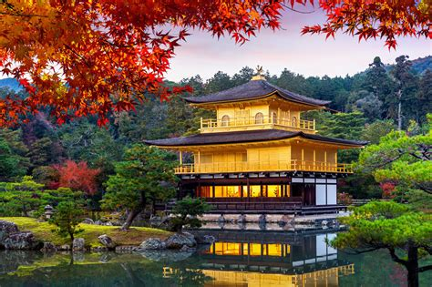

Fushimi Inari-taisha

Situé au sud de Kyoto, le sanctuaire Fushimi Inari-taisha est l’un des sites les plus célèbres du Japon. Dédié à Inari, divinité shinto du riz et de la prospérité, il est mondialement connu pour ses milliers de torii vermillon formant de longs tunnels à flanc de montagne.
Le chemin sacré traverse une forêt paisible et offre, au fil de l’ascension, de nombreux points de vue sur la ville de Kyoto. Chaque torii, offert par des fidèles ou des entreprises, symbolise la gratitude et la prospérité, donnant au lieu une forte dimension spirituelle.
À la fois impressionnant et apaisant, Fushimi Inari est un incontournable pour découvrir la spiritualité, les traditions et les paysages naturels du Japon.